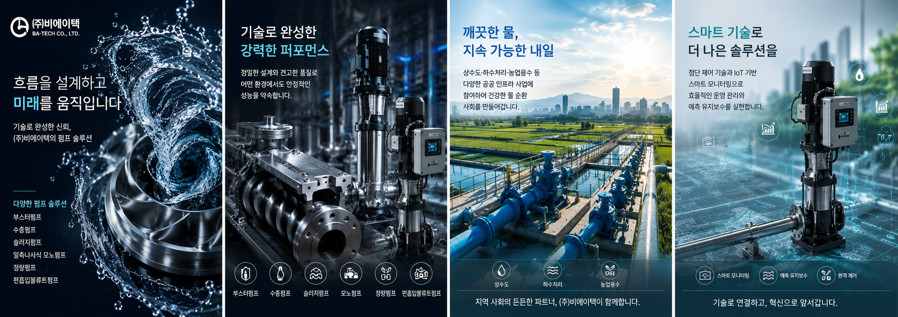

신뢰와 기술을 바탕으로 수처리 산업의 미래를 열어갑니다.
비에이텍은 2010년 설립 이래 수처리 펌프 분야에서 지속적인 연구 개발과 철저한 품질 관리를 통해 고객에게 최고의 솔루션을 제공해 왔습니다.
최신 설비와 숙련된 전문 인력을 바탕으로 맞춤형 펌프 제작부터 완벽한 시공, 그리고 사후 관리까지 책임지는 원스톱 서비스를 실현합니다.
우리의 목표는 단순한 기계 제작이 아닌, 생명의 근원인 물을 안전하게 관리하고 환경을 지키는 가치 있는 기술을 제공하는 것입니다.
비에이텍의 핵심 역량과 주요 제품 라인업을 한눈에 확인하실 수 있습니다.

우리는 다음의 가치를 바탕으로 고객에게 최고의 경험을 제공합니다.
고객과의 약속을 최우선으로 하며, 엄격한 품질 관리를 통해 고장 없는 견고한 제품을 제공합니다.
무맥동 등속도 캠 기술 등 끊임없는 연구개발로 업계를 선도하는 최신 펌프 기술을 적용합니다.
에너지 효율을 높이고 오폐수 처리 및 수자원을 적극적으로 보호하는 친환경 솔루션을 추구합니다.
효율적인 업무 분담과 전문성을 바탕으로 최적의 서비스를 제공합니다.
대표이사
제품생산 / 원자재구입
부장
부장
과장
계약 / 공정관리
이사
사원
품질관리 / A/S
실장
비에이텍이 걸어온 혁신의 발자취입니다.
위생안전기준(KC) 인증 획득 (수도용 부스터 펌프 시스템). 경영혁신형 중소기업(Main-Biz) 확인.
특수 등속도 캠 적용 무맥동 정량펌프 (PKD 시리즈) 라인업 확대.
강원 춘천시 퇴계제2농공단지 내 자가 공장 및 성능시험장 운영.
ISO 9001:2015 품질경영시스템 인증 획득 및 벤처기업 인증.
비에이텍(주) 설립 (설립 당시 명칭: (주)강원유체).